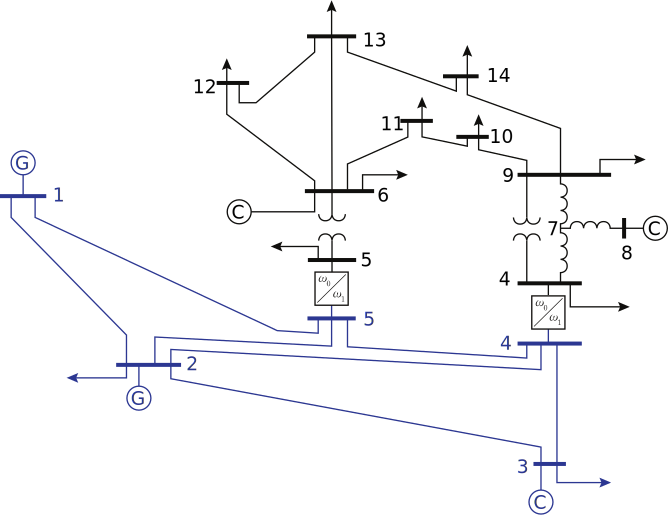
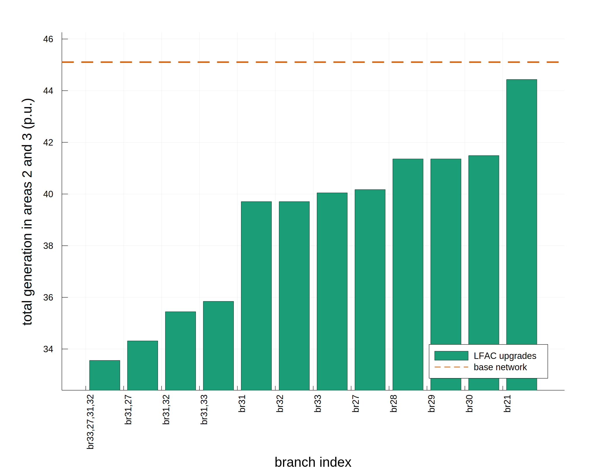

VariableFrequencyOPF.jl
AC optimal power flow for networks with multiple frequencies, with each frequency as an optimization variable.
One main goal of this package is a flexible and extensible implementation which can fully accommodate the multiple and variable frequency OPF formulation with power flow control between frequency areas. This package allows additional modifications to the constraints and objective function as the analysis develops.
Another goal is a smooth extension of existing data formats to the case of multiple and variable frequencies. To this end, it is important that the software can import industry standard steady state network modeling formats with the minimum necessary additional specification of the parameters which are new to this framework.
Usage
Add this package with the following command in the Julia REPL:
] add git@github.com:WISPO-POP/VariableFrequencyOPF.jl.gitor
] add https://github.com/WISPO-POP/VariableFrequencyOPF.jl.gitLoad the package:
using VariableFrequencyOPFYou can also run the package tests:
] test VariableFrequencyOPFParsing Network Data

Input data
Each frequency area, or subnetwork, is described by a network data file in a standard format, including PSS®E .raw files, Matpower .m files, or PowerModels dictionaries saved in formats such as .json.
The file subnetworks.csv contains the names of the network data files for each subnetwork, in the order in which they are to be parsed, and the subnetwork-wide frequency parameters, including a boolean specification of whether the frequency is variable, the base frequency at which the impedance parameters in the network file are defined, and the range of allowed frequencies. An example subnetworks.csv is shown here:
| index | file | variable_f | f_base | f_min | f_max |
|---|---|---|---|---|---|
| 1 | base_subnet.raw | false | 60 | 60 | 60 |
| 2 | lfac_subnet.raw | true | 60 | 10 | 50 |
The file interfaces.csv specifies all the connections between different subnetworks. Each interface is given a unique integer index, and each row in the file which has this interface index specifies a connection to the interface. The rows specify the subnetwork and bus, along with any additional parameters, including the maximum apparent power in per unit. An example interfaces.csv file is shown below.
| index | subnet_index | bus | s_max |
|---|---|---|---|
| 1 | 1 | 1011 | 10.0 |
| 2 | 1 | 1013 | 10.0 |
| 1 | 2 | 1 | 10.0 |
| 2 | 2 | 2 | 10.0 |
This example shows two interfaces. The first connects bus 1011 in subnetwork 1 to bus 1 in subnetwork 2, and the second connects bus 1013 in subnetwork 1 to bus 2 in subnetwork 2. The apparent power limit at each interface connection is 10.0 p.u.
Modeling and Solving the OPF

Examples
Solve the OPF for a network with a variable frequency (low frequency AC) portion
Consider a power system which is divided into two areas connected by AC-AC converters: one operates at a fixed frequency of 60 Hz, and the other is a multi-terminal low frequency AC network, whose frequency can be chosen. In the directory test/data/case14_twoarea is data for a modified IEEE 14 bus network which fits this paradigm, as drawn here, with the variable frequency portion in blue: 
In this example, we solve the OPF for this case, and we print the termination status, generation cost and optimal frequencies (The frequency of the standard part of the network is fixed at 60 Hz, and the frequency of the other part is allowed to vary between 1.0 and 100.0 Hz).
using VariableFrequencyOPF
network = "test/data/case14_twoarea/two_area/"
objective = "mincost"
solution = VariableFrequencyOPF.multifrequency_opf(network, objective)
results_dict = solution[1]
println("Status:")
println(results_dict["status"])
println("\nCost:\n==============================")
println("Variable frequency subnetwork:")
println(results_dict["cost"][1])
println("Fixed frequency subnetwork:")
println(results_dict["cost"][2])
println("\nFrequency:\n==============================")
println("Variable frequency subnetwork:")
println(results_dict["frequency (Hz)"][1])
println("Fixed frequency subnetwork:")
println(results_dict["frequency (Hz)"][2])output:
Status:
LOCALLY_SOLVED
Cost:
==============================
Variable frequency subnetwork:
7565.237470495639
Fixed frequency subnetwork:
553.6125608844086
Frequency:
==============================
Variable frequency subnetwork:
1.0
Fixed frequency subnetwork:
60.0Solve the OPF for a set of upgrades
We want to define a set of upgrades in the Nordic system, each consisting of a single point-to-point upgrade. We use the function enumerate_branches to create the network data for each upgraded case. This generates a folder of network data for the single network file base_network with one line converted to LFAC, once for each index in indices, or if indices is empty, for every non-transformer branch in the network. Once we have created the data for each of these upgrades, we can call run_series to solve the OPF for each upgrade.
using VariableFrequencyOPF
original_network = "test/data/nordic_fault/base/fault_4032_4044.m"
# We choose to put the new network data in the same folder because
# we also want to use some data that is already there. Each upgrade
# gets its own folder.
new_data_directory = "test/data/nordic_fault/"
standard_frequency = 50.0
lfac_branch_upgrades = [21,27,28,29,30,31,32,33]
VariableFrequencyOPF.upgrade_branches(
original_network,
new_data_directory,
standard_frequency,
indices=lfac_branch_upgrades
)
# Minimize generation in areas 2 and 3 with plots including
# the power flow between areas 1 and 2
objective = "areagen"
gen_areas = [2,3]
area_transfer = [1,2]
# We want to plot the results of all branch upgrades,
# so we set `enum_branch` to true
enum_branches = true
solution = VariableFrequencyOPF.run_series(
new_data_directory,
objective;
gen_areas=gen_areas,
area_transfer=area_transfer,
enum_branches=enum_branches
)
results_dict = solution[1]
n_subnets = solution[2]
subnet_array = solution[3]
idx_sorted = solution[4]
series_output_folder = solution[5]
plot_best_x = solution[6]
println("Ran the OPF for all folders and saved the outputs in $series_output_folder.")
# Now we generate plots showing the results across all the upgrades.
# We could plot multiple series (e.g. with different operating conditions,
# converter parameters, etc.) on the same x axis by adding them
# to the following array. Here we only plot one.
results_dict_allplots = [results_dict]
plot_output_folder = "results/nordic_fault/"
series_labels = ["LFAC upgrades"]
VariableFrequencyOPF.plot_results_dicts_bar(
results_dict_allplots,
n_subnets,
subnet_array,
idx_sorted,
plot_output_folder,
plot_best_x,
series_labels,
color_palette=:Dark2_8
)The function run_series solves the OPF for each upgrade and generates results in .csv files. The next function, plot_results_dicts_bar, generates and saves plots of certain variables. For example, we can look at the plot of the objective value, total generation in areas 2 and 3 (p.u.): 
Index
VariableFrequencyOPF.frequency_rangesVariableFrequencyOPF.make_mn_dataVariableFrequencyOPF.multifrequency_opfVariableFrequencyOPF.read_sn_dataVariableFrequencyOPF.run_subnetsVariableFrequencyOPF.upgrade_branches
Functions
VariableFrequencyOPF.frequency_ranges — Methodfunction frequency_ranges(
f_min,
f_max,
subnet::Int64,
directory::String,
objective::String,
x_axis::Array,
y_axis::Array;
gen_areas=Int64[],
area_transfer=Int64[],
gen_zones=[],
zone_transfer=[],
plot_vert_line::Tuple=([],""),
plot_horiz_line::Tuple=([],""),
xlimits::Array{Any,1}=[],
ylimits::Array{Any,1}=[],
output_plot_label::Tuple{String,String}=("",""),
scopf::Bool=false,
contingency::Tuple=(0,),
k_cond=[],
k_ins=[],
scale_load=1.0,
scale_areas=Int64[],
no_converter_loss=false
)Models and solves an OPF with frequency in specified ranges between f_min and f_max.
Arguments
f_min: lower bounds on frequency, one for each point in the frequency sweepf_max: upper bounds on frequency, one for each point in the frequency sweep. Must have the same length asf_min.subnet::Int64: subnetwork for which the frequency bounds are applieddirectory::String: the directory containing all subnetwork data, subnetworks.csv, and interfaces.csvobjective::String: the objective function to use, from the following:- "mincost": minimize generation cost
- "areagen": minimize generation in the areas specified in
gen_areas - "zonegen": minimize generation in the zones specified in
gen_zones - "minredispatch": minimize the change in generator dispatch from the initial values defined in the network data
x_axis::Array: Array of Tuples identifying the x axis series for which plots should be generated over the points in the frequency sweep. A separate folder of plots is generated for each Tuple in the array. The series can be specified in the Tuple in one of three ways:- results dictionary values: A two-element Tuple, where the first element is a String matching a key in the results dictionary output from
multifrequency_opfand the second element is an Int specifying a subnetwork. This plots the values of this key and subnetwork entry on the x axis. - network data values: A Tuple with elements corresponding to keys at each level of the network data dictionary, identifying any network variable value. This plots the values of the specified network variable on the x axis. Any key in the Tuple may be an Array, in which case a separate plot is generated for each key. For example, to generate four plots, the active and reactive power at the origin ("f") bus and destination ("t") bus for branch 1 in subnetwork 2, use the Tuple
("sn",2,"branch",1,["pt","pf","qt","qf"]) - custom values: A two-element Tuple, where the first element is a String not matching any keys in the results dictionary and the second element is an Array. This plots the values in the Array on the x axis with the label in the String.
- results dictionary values: A two-element Tuple, where the first element is a String matching a key in the results dictionary output from
y_axis::Array: Array of Tuples identifying the y axis series for which plots should be generated over the points in the frequency sweep. A separate folder of plots is generated for each Tuple in the array. These are specified in the same way asx_axis.gen_areas: all areas in which generation should be minimized ifobj=="areagen"area_transfer: two areas with power transfer between them that should be saved and plotted. Results for P, Q, S, and loss are saved for power transfer between the two areas. Must have exactly two elements.gen_zones: all zones in which generation should be minimized ifobj=="zonegen"zone_transfer: two zones with power transfer between them that should be saved and plotted. Results for P, Q, S, and loss are saved for power transfer between the two zones. Must have exactly two elements.plot_vert_line::Tuple: x values of vertical lines to overlay on the plot. The first element is a scalar or Array specifying one or more x values to plot, and the second element is a String or Array of Strings specifying the label or labels. Default ([],"") does not add any lines to the plot.plot_horiz_line::Tuple: y values of horizontal lines to overlay on the plot. The first element is a scalar or Array specifying one or more y values to plot, and the second element is a String or Array of Strings specifying the label or labels. Default ([],"") does not add any lines to the plot.xlimits::Array{Any,1}: Array of two values specifying the min and max x axis limits to apply to the plots, overriding any other limits. Default [] does not change the plot.ylimits::Array{Any,1}: Array of two values specifying the min and max y axis limits to apply to the plots, overriding any other limits. Default [] does not change the plot.output_plot_label::Tuple{String,String}: specifies the plot to pass to the output. The first element must match the x axis label, and the second must match the y axis label.scopf::Bool: if true, model and solve the N-1 security constrained OPF for each network. Each network folder must contain a contingency specification file (*.con) for each subnetwork. Default false.contingency::Tuple: indices of the contingency to plot. The precontingency index is (0,). Default (0,).k_cond: conductor utilization parameter for HVDC. Only used when f==0. Default [].k_ins: insulation factor parameter for HVDC. Only used when f==0. Default [].scale_load: factor for scaling the load in the frequency sweep. Default 1.0.scale_areas: array of integer area indices for which the load scaling factorscale_loadshould be applied. Applies to all areas if this array is empty. Default Int64[].no_converter_loss: override all converter loss parameters specified in the data and replace them with the the lossless converter model.
VariableFrequencyOPF.make_mn_data — Methodfunction make_mn_data(
subnetworks,
interfaces,
networks::Dict{String,Any}
)Builds the mn_data dictionary from the specifications of the subnetworks and interfaces DataFrames and the network data in the networks Dict.
Arguments
subnetworks: a DataFrame in the format of subnetworks.csv, and interfaces.csvinterfaces: a DataFrame in the format of interfaces.csvnetworks::Dict{String,Any}: a Dict of all subnetworks, as PowerModels networks
VariableFrequencyOPF.multifrequency_opf — Methodmultifrequency_opf(
folder::String,
obj::String;
gen_areas=[],
area_interface=[],
gen_zones=[],
zone_interface=[],
print_results::Bool=false,
override_param::Dict{Any}=Dict(),
fix_f_override::Bool=false,
direct_pq::Bool=true,
master_subnet::Int64=1,
suffix::String="",
start_vals=Dict{String, Dict}("sn"=>Dict()),
no_converter_loss::Bool=false,
uniform_gen_scaling::Bool=false,
unbounded_pg::Bool=false
)Models and solves the OPF for a single network with data contained in folder.
Arguments
folder::String: the directory containing all subnetwork data, subnetworks.csv, and interfaces.csvobj::String: the objective function to use, from the following:- "mincost": minimize generation cost
- "areagen": minimize generation in the areas specified in
gen_areas - "zonegen": minimize generation in the zones specified in
gen_zones - "minredispatch": minimize the change in generator dispatch from the initial values defined in the network data
gen_areas: integer array of all areas in which generation should be minimized ifobj=="areagen"area_interface: two areas with power transfer between them that should be saved and plotted. Results for P, Q, S, and loss are saved for power transfer between the two areas. Must have exactly two elements.gen_zones: integer array of all zones in which generation should be minimized ifobj=="zonegen"zone_interface: two zones with power transfer between them that should be saved and plotted. Results for P, Q, S, and loss are saved for power transfer between the two zones. Must have exactly two elements.print_results::Bool: if true, print the DataFrames containing the output values for buses, branches, generators, and interfaces. These values are always saved to the output .csv files whether true or false.override_param::Dict{Any}: values to override in the network data defined infolder. Must follow the same structure as the full network data dictionary, beginning with key "sn". Default empty Dict.fix_f_override::Bool: if true, fix the frequency in every subnetwork to the base value, overriding thevariable_fparameter tovariable_f=falsefor every subnetwork. Default false.direct_pq::Bool: If direct_pq is false, then the interface is treated as a single node and power flow respects Kirchoff Laws, by constraining the voltage magnitude and angle on each side to be equal and enforcing reactive power balance. Default true.master_subnet::Int64: ifdirect_pq==false, the angle reference must be defined for exactly one subnetwork, since the other subnetwork angles are coupled through the interfaces. Value ofmaster_subnetdefines which subnetwork provides this reference. Default 1.suffix::String: suffix to add to the output directory when saving results. Default empty string.start_vals: Nested dictionary populated with values to be used as a starting point in the optimization model. Applies to busvmandva, genpgandqg, branchpt,pf,qtandqfand subnetf. Any of these values which are present in the dictionary will be applied; other values will be ignored. A full network data dictionary can be used. DefaultDict{String, Dict}("sn"=>Dict()).
VariableFrequencyOPF.read_sn_data — Methodread_sn_data(folder::String)Reads a network folder and builds the mn_data dictionary.
Arguments
folder::String: the path to the folder containing all the network data
VariableFrequencyOPF.run_subnets — Methodrunsubnets( parentfolder::String, objective::String; genareas::Array=[], areatransfer::Array=[], genzones::Array=[], zonetransfer::Array=[], enumbranches::Bool=false, plotbestx::Int64=-1, scopf::Bool=false, ctgplots::Array{Int64,1}=[0], runfixf::Bool=false, runindirPQ::Bool=false, print_results::Bool=false )
Models and solves an OPF for every network in a directory.
Arguments
parent_folder::String: a directory containing full network data for one or more networks, each in a folder containing all subnetwork data, subnetworks.csv, and interfaces.csvobj::String: the objective function to use, from the following:- "mincost": minimize generation cost
- "areagen": minimize generation in the areas specified in
gen_areas - "zonegen": minimize generation in the zones specified in
gen_zones - "minredispatch": minimize the change in generator dispatch from the initial values defined in the network data
gen_areas::Array{Int64,1}: all areas in which generation should be minimized ifobj=="areagen"area_transfer::Array{Int64,1}: two areas with power transfer between them that should be saved and plotted. Results for P, Q, S, and loss are saved for power transfer between the two areas. Must have exactly two elements.gen_zones::Array{Int64,1}: all zones in which generation should be minimized ifobj=="zonegen"zone_transfer::Array{Int64,1}: two zones with power transfer between them that should be saved and plotted. Results for P, Q, S, and loss are saved for power transfer between the two zones. Must have exactly two elements.enum_branches::Bool: if true, collect results from each folder for plotting bar graphs. This is used when the possible branch upgrades have been enumerated and a comparison is desired. Default false.plot_best_x::Int64: number of results to plot, sorted from smallest to largest objective. Ifplot_best_x<= 1, the results of all networks which gave feasible solutions are plotted. Default -1.scopf::Bool: if true, model and solve the N-1 security constrained OPF for each network. Each network folder must contain a contingency specification file (*.con) for each subnetwork. Default false.ctg_plots::Array{Int64,1}: indices of the contingencies to plot. The base case index is 0. Default [0].
VariableFrequencyOPF.upgrade_branches — Methodfunction upgrade_branches(
base_network::String,
output_location::String,
fbase;
indices=[],
output_type="input"
)Creates a folder of network data for the network base_network with one line converted to LFAC, one for each index in indices, or if indices is empty, for every non-transformer branch in the network.